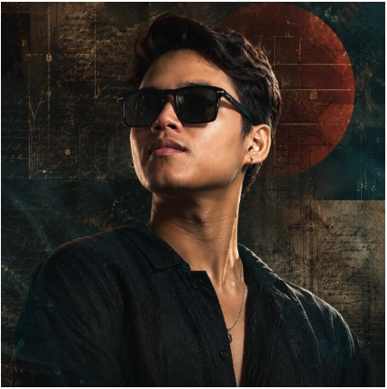
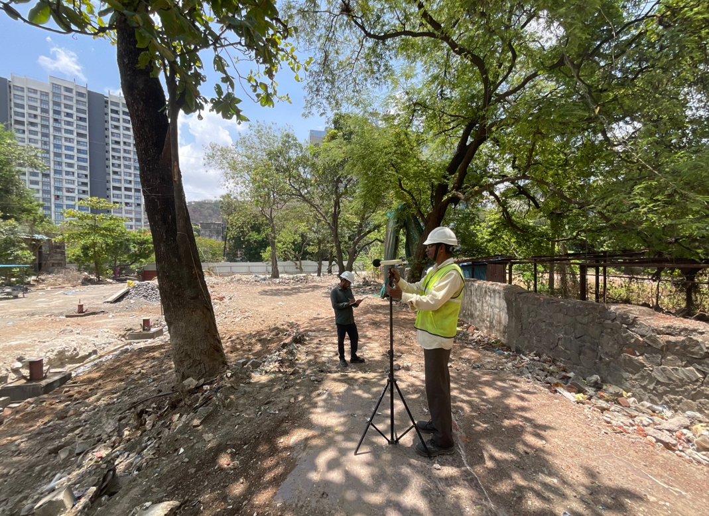
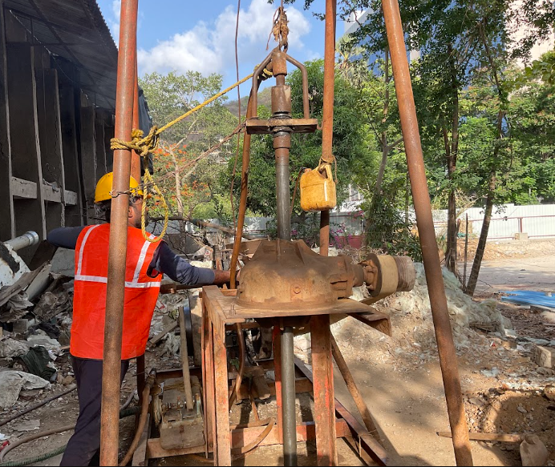
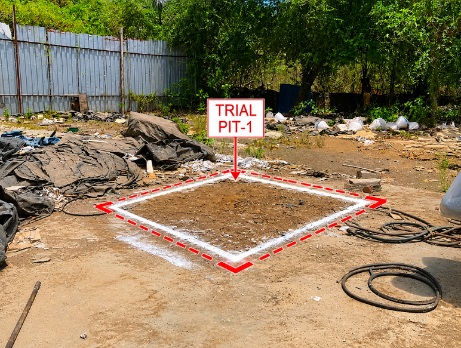
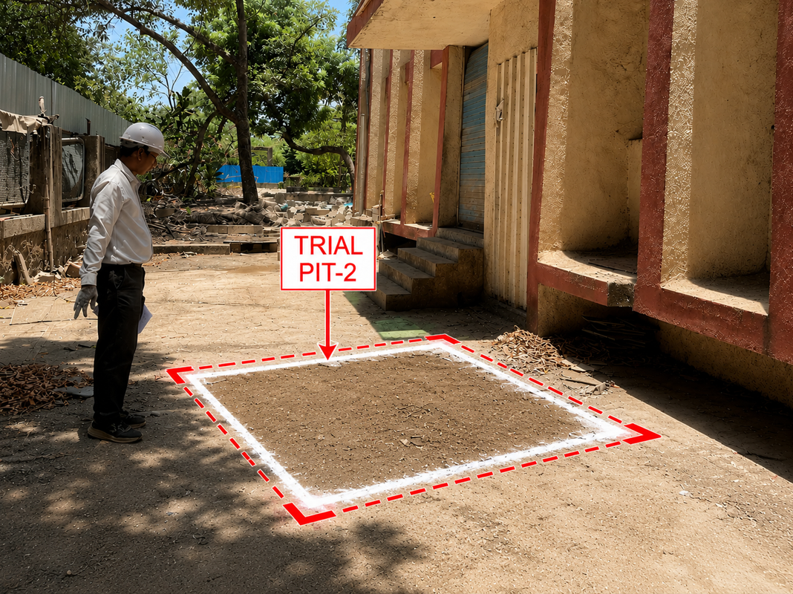

Mumbai, India · Open to work
Ridip
Pagag
Project Coordinator — Surveying & Land Acquisition / AutoCAD & Excel Educator
I'm a civil engineer building a career at the intersection of data, design and delivery — coordinating land surveys for multimillion-rupee pipeline projects by day, and teaching AutoCAD & Excel to 300+ learners on YouTube on the side. Now growing toward presentation design, MIS and reporting.

Ridip Pagag · B.Tech Civil Engg.
Objective
Motivated and detail-oriented, I'm working to build a strong career across surveying, presentation design, MIS and reporting. I don't come from a traditional presentation-design background — I come from field surveys, land acquisition, and CAD drawings — but that's exactly what I bring to the table: structured, data-first thinking applied to how information is communicated.
I'm eager to apply my analytical, organizational and communication skills to support business operations, data management, reporting and creative presentation development — while continuing to sharpen my technical expertise in AutoCAD and Excel, both on the job and through the tutorials I publish for other learners.
- Quick learner — adapts fast to new tools and processes
- Works well under pressure, consistently meets deadlines
- Highly motivated to grow into a Presentation / MIS / RTA role
The Route So Far
Career mapped the way I map a survey route — as a line with waypoints. Each stake below is a role, plotted in the order it happened.
Customer Care Executive
- Handled 120+ inbound calls daily on billing, network issues and service activations.
- Delivered a 95% first-call resolution rate and 98% customer satisfaction score.
Customer Success Specialist
- Reviewed high volumes of posts, images, videos and comments for policy violations.
- Made rapid, context-aware moderation decisions and escalated complex cases to senior teams.
- Analysed violation trends to recommend policy and tooling improvements.
Team Leader / Assistant Manager, Contact Center
- Ran day-to-day team operations — assigning tasks and holding deadlines.
- Led and motivated the team to hit performance goals.
- Reported progress, challenges and wins to senior management.
Volunteer Civil Engineer
- Contributed to the design and construction of an affordable swimming pool project.
- Improved site plans for greater construction efficiency.
Project Coordinator Current · Off Role
- Coordinate end-to-end land acquisition across 50+ km pipeline routes — 200+ landowner consents, 90% negotiation success rate.
- Oversee field survey teams using CAD/GIS for chainage mapping, terrain analysis and plot documentation, in line with Tehsildar and Forest Department requirements.
- Run rate negotiations (3+ rounds/site), prepare KYC and consent paperwork, and clear delays such as pending signatures.
- Own stakeholder follow-ups, cutting acquisition timelines by 20% through proactive coordination.
- Maintain Excel-based project databases for chainage plotting and compensation tracking on multimillion-rupee bids.
Toolkit
Technical
Working Style
Education
| Field of Study | School / University | Board | Year | Division |
|---|---|---|---|---|
| B.Tech, Civil Engineering | AGC | MRSPTU | 2021 | First Division |
| Science (PCM) | Dibrugarh University | AHSEC | 2016 | First Division |
| 10th | BTSHSS | SEBA | 2014 | Second Division |
Certifications
Supervisor Foundation
JUMP Supervisor
JUMP Certification for Supervisors
Market Quality Champion
Selected Work
Field surveys, teaching, and volunteer builds — the projects behind the résumé.
Pipeline Land Acquisition
End-to-end coordination of land acquisition across 50+ km of pipeline route — surveys, landowner negotiations, KYC/consent documentation and compliance sign-off, at 90% negotiation success.
CADXcel Ridip
A YouTube channel teaching AutoCAD 2D/3D and Excel workflows to engineers, students and professionals — practical tutorials, formulas, and CAD + Excel integration tricks.
Affordable Swimming Pool
Volunteer civil engineering work on an affordable swimming pool build — contributed to design and construction, and reworked site plans for better efficiency.
Contact Center Leadership
Led a contact-center team as Assistant Manager — task assignment, coaching and performance reporting to senior management on a consistent cadence.

Borehole Investigation
Geotechnical field investigation

Pipeline Survey
Alignment & Route Mapping

Land Acquisition
Field verification & Coordination

Soil Sampling
SPT & UDS Collection

Rock Coring
RQD & Core Recovery Logging

Site Inspection
Construction Monitoring

Drilling Operations
Rotary Drilling Activities

Survey Work
Field Data Collection

Construction Site
Project Progress Monitoring

Pipeline Construction
ROW & Utility Coordination

Field Equipment
Survey & Investigation Tools

Project Site
Engineering Field Activities
CADXcel Ridip
Everything I know about AutoCAD and Excel, packaged into practical, watchable tutorials.
AutoCAD + Excel, made practical
@CadXcel_Ridip · India · Joined Jun 4, 2021This channel is all about AutoCAD and Excel — two powerful tools that can boost your engineering, design and data skills. Expect practical techniques, professional workflows and real-world projects that help you work smarter and faster.
What you'll find: AutoCAD 2D & 3D tutorials, Excel for engineers and project management, formulas and automation tricks, CAD + Excel integration, and real project walkthroughs — for students, engineers and working professionals alike.
Beyond the Desk
Presentation Design
Building toward a career as a presentation specialist — combining creativity with structured thinking to turn ideas and data into clear, engaging slide decks.
Outdoor Activities
Hiking, cycling, camping and exploring new landscapes — a way to unwind, stay active, and stay connected to the world outside the screen.
Jeet Kune Do
Trained in Bruce Lee's philosophy of adaptability and simplicity — "using no way as way." A mindset of constant self-improvement, on and off the mat.